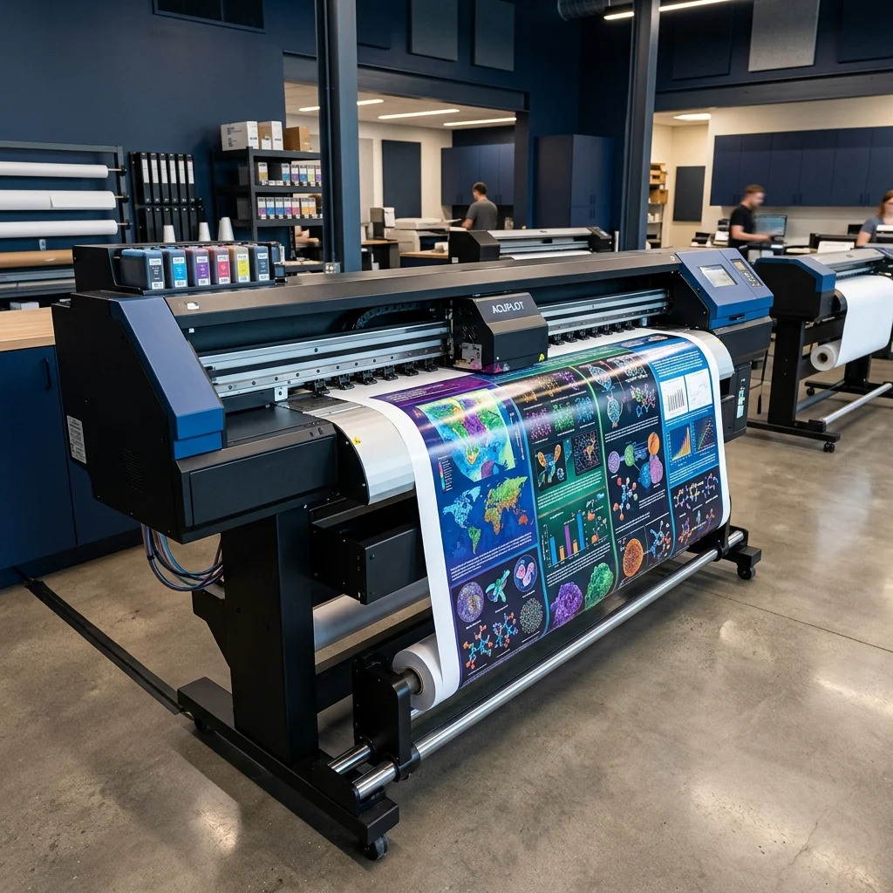

왕십리 A1·A2 포스터 및 대형 출력
학술 발표부터 전시 포스터까지, 타협 없는 퀄리티의 대형 출력. 급한 주말에도 스캔데이에서 바로 뽑으세요.

어디서든 가깝게, 주말에도 확실하게
🚇 1정거장이면 충분한 접근성
지하철을 타면 청량리, 뚝섬, 서울숲에서도 5~10분 컷! 주변 동네에 대형 프린터가 없어도 당황하지 말고 왕십리로 오세요.
주말 영업 · 공휴일 별도 확인
대학가 인쇄소가 모두 문을 닫는 주말, 급하게 포스터나 도면을 뽑아야 할 때 스캔데이는 든든하게 문이 열려 있습니다.
🖨️ 최고급 용지와 선명한 색감
일반 백상지부터 고급 인화지까지, 잉크 번짐 없는 고해상도 컬러 출력으로 중요한 학술 발표의 질을 높여드립니다.
포스터 출력 전 확인하세요
A1과 A2 중 어떤 크기로 준비하나요?
A1은 594 × 841mm, A2는 420 × 594mm입니다. 학회·학교·전시 주최 측의 제출 규격을 먼저 확인하고 그 크기에 맞춰 파일을 준비해 주세요.
파일을 준비할 때 무엇을 확인하나요?
최종 출력 크기에서 글자와 그림이 선명한지, 글꼴이 바뀌거나 내용이 잘리지 않는지 확인해 주세요. 파일 형식과 용지, 여백 등 상세 조건은 출력 전 매장에 문의해 주세요.
주말이나 급한 일정에도 가능한가요?
토·일요일에도 운영합니다. 공휴일은 대체로 휴무이나 날짜마다 달라질 수 있습니다. 수량과 파일 상태, 매장 상황에 따라 작업 시간이 달라지므로 마감이 정해져 있다면 방문 전에 전화로 확인해 주세요.